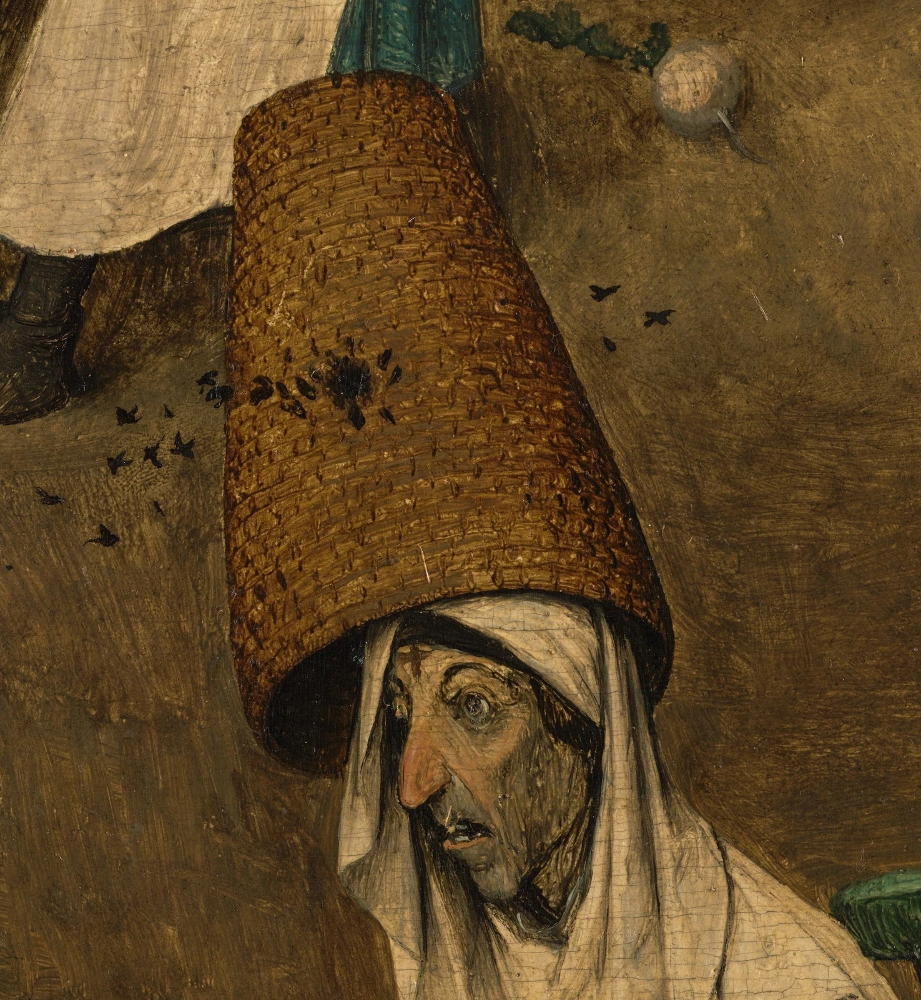
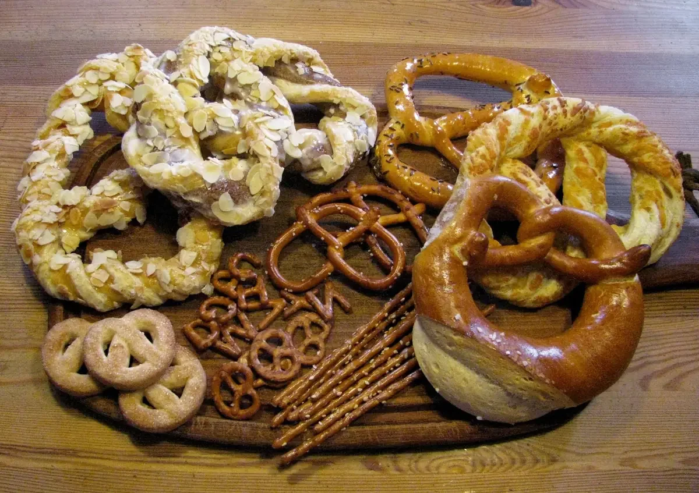
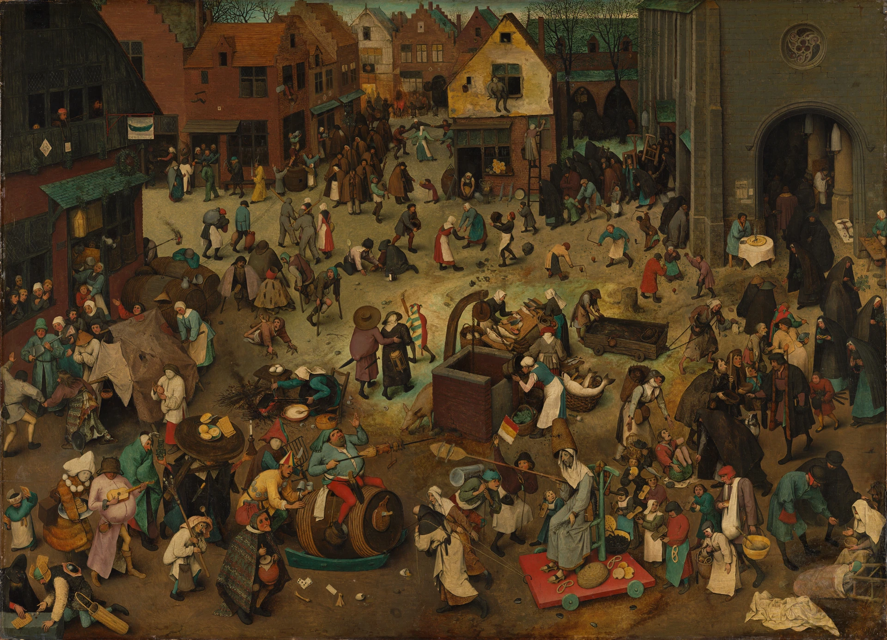
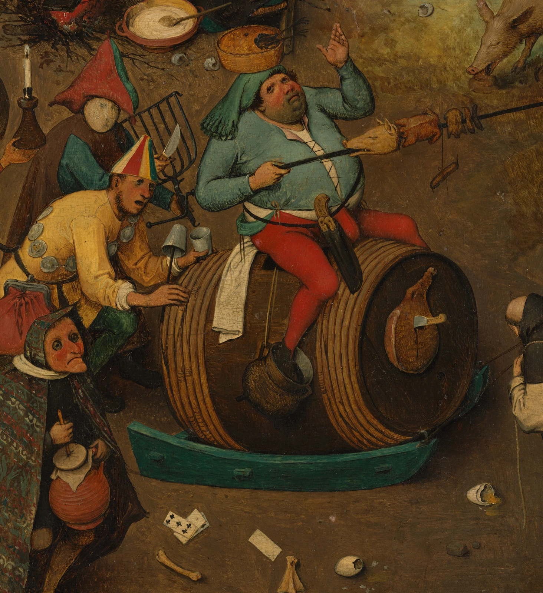

아직 펼치지 않은 카드금식 전날의 잔치 · 4프레첼매듭처럼 꼬인 프레첼 모양은 무엇을 본떴다는 이야기가 있을까요?프레첼 모양은 무엇을 닮았을까?
사순절 앞 · 1559년의 그림플랑드르(오늘의 벨기에) · 빈 미술사 박물관
프레첼
사순절은 부활절 앞 마흔 날, 고기와 달걀, 버터를 끊던 때예요. 요즘 프레첼에는 치즈나 설탕, 아몬드를 얹기도 하지만, 옛 프레첼은 밀가루와 물, 소금뿐이라 이때에도 먹을 수 있었어요. 1559년 브뤼헐은 사순절 직전의 잔치와 사순절이 맞붙는 광장을 그리며, 마른 ‘사순절’의 수레에 프레첼을 실었어요. 그림 속에서 잔치의 음식과 사순절의 음식을 하나씩 찾아보세요.
뚱뚱한 아저씨와 마른 아주머니가 음식으로 겨루는 그림이 있대! 프레첼은 어느 편에 숨어 있을까?
검수 전 시안이에요(기준서 1판). 장면에는 빈 미술사 박물관의 설명과 프레첼에 관한 기사, 그림 백과사전 연구에 있는 것만 옮겼어요. 610년 수도사 이야기처럼 기록이 없는 이야기는 그렇다고 밝혔어요. 상상은 ‘눈 감고 상상해 보기’에만 썼어요.
시안 확인용카드 단계 미리 보기
1
잔칫상의 꼬인 빵
프레첼(독일어로 브레첼)은 언제부터 있었을까요? 가장 오래된 그림으로 꼽히는 것은 12세기의 잔칫상이에요.
12세기의 수녀원장 헤라트가 수녀들을 가르치려고 엮은 그림 백과사전 『기쁨의 정원』에는, 에스더 왕비와 왕의 잔칫상이 있어요. 식탁 가운데 노랗게 꼬인 빵이 보여요. 가장 오래된 프레첼 그림일지도 모른다고 해요.

다만 이 책의 원본은 19세기의 전쟁 때 도서관과 함께 불타 없어졌어요. 지금은 옮겨 그린 그림으로만 남아 있어서, 원본에도 프레첼이 그대로 있었는지는 확실하지 않대요.
아주 옛날 그림 속 잔칫상에 꼬인 빵이 있어! 프레첼일까?
물어보기식탁 위에서 꼬인 빵을 찾아볼래?
2
사순절의 수레
1559년 피터르 브뤼헐이 그린 「사육제와 사순절의 싸움」의 한 부분이에요. 비쩍 마른 ‘사순절’이 딱딱한 의자에 앉아 수레를 타고 와요. 수레는 수도사와 수녀가 힘겹게 끌어요.
사순절은 머리에 벌집을 쓰고, 청어 두 마리를 얹은 빵 삽을 창처럼 내밀어요. 둘레에는 프레첼과 사순절 빵, 생선과 홍합이 있어요. 모두 사순절에 흔히 먹던 음식이에요.

벌집은 그 무렵 교회를 나타내는 흔한 상징이었어요. 사순절 쪽 아이들의 이마에는 사순절 첫날, 재의 수요일에 받는 재 십자가가 그려져 있어요.
벌집 모자를 쓴 아주머니가 청어 두 마리를 얹은 삽을 들고 있어!
물어보기벌집 모자 둘레에 벌이 몇 마리 날고 있을까?
3
사육제와 사순절의 싸움
사순절 직전, 고기를 실컷 먹는 잔치를 ‘사육제’라고 해요. 브뤼헐은 잔치의 마지막 날과 금식의 첫날을 사람처럼 그렸어요. 왼쪽 여관 앞에서는 뚱뚱한 ‘사육제’가 맥주 통에 올라타고, 오른쪽 교회 쪽에서는 마른 ‘사순절’이 수레를 타고 맞서요.
오스트리아 빈의 미술사 박물관은 이 그림을 사육제와 사순절에 얽힌 네덜란드 풍습의 백과사전이라고 불러요. 그림 속 숫자를 하나씩 눌러, 두 편의 음식을 찾아보세요.
그림 속 숫자를 하나씩 눌러 보세요. ‘가까이 보기’를 누르면 그 자리를 크게 볼 수 있어요.

피터르 브뤼헐 「사육제와 사순절의 싸움」, 1559년 · 빈 미술사 박물관 · 그림: 피터르 브뤼헐(아버지) · 퍼블릭 도메인 · 위키미디어 공용
그림 위의 숫자나 아래 번호를 눌러 보세요.
여섯 곳을 다 찾았어요. 사순절 쪽에는 프레첼이 곳곳에 숨어 있어요.
박물관은 기사의 창 시합을 흉내 낸 이런 우스꽝스러운 겨루기가 15~16세기에 실제로 벌어졌고, 그림 속 다른 모습들도 그때의 풍습 그대로라고 설명해요. 다만 이 모든 일이 한곳에서 한꺼번에 벌어지는 것은 브뤼헐이 지어낸 거예요.
그림은 어느 한쪽이 더 낫다고 말하지 않아요. 실컷 먹는 날과 참는 날, 사람 사는 두 모습을 나란히 보여 줘요.
뚱뚱한 아저씨는 고기 꼬챙이, 마른 아주머니는 생선 삽! 누가 이길까?
물어보기그림 속에서 프레첼을 몇 개나 찾을 수 있어?
4
빵집 간판이 된 프레첼
옛날에는 글을 못 읽는 사람이 많아서, 장인들의 모임은 하는 일을 그림 표지로 알렸어요. 빵 굽는 사람들의 표지가 바로 프레첼이었고, 독일 남부에서는 적어도 12세기부터 써 왔어요. 지금도 프레첼 모양 간판은 ‘여기가 빵집’이라는 표시예요.
이 간판은 독일 피르나의 오래된 광장에 걸린, 빵 굽는 사람들의 표지예요.

빵집 간판에 프레첼이 그려져 있어. 여기가 빵집이라는 표시야!
물어보기우리 동네 빵집 간판에는 무엇이 그려져 있을까?
눈 감고 상상해 보기
다시 1559년의 장터로 가 볼까요. 찬바람 부는 광장에 와플 굽는 냄새와 생선 비린내가 한데 섞여요. 왼쪽에서는 북과 피리 소리가 요란하고, 오른쪽 교회 쪽에서는 아이들이 흔드는 나무 딱따기 소리가 딱딱 다가와요. 빨간 수레 위에서 노릇한 프레첼이 흔들려요.
눈을 감아 봐. 고소한 와플 냄새! 딱딱, 나무 딱따기 소리가 다가와.
나의 자리
꼬인 모양의 뜻은 아무도 확실히 모르지만, 브뤼헐의 프레첼은 분명 마흔 날을 참는 사람들의 빵이었어요. 이제 프레첼을 보면 무엇이 먼저 떠오르나요?
다음에 프레첼을 먹을 때, 그림 속 누구를 떠올릴래?
마음에 닿는 한 줄을 고르거나 직접 써 보세요. 한 줄을 남기면 이 자리의 도장이 찍혀요. 이 기기에만 저장돼요.
더 깊이
이야기를 보다 궁금해질 만한 것들이에요. 답을 읽거나 짧은 영화로 보세요.

‘사육제’는 뭐고, 두 사람은 왜 싸워요?
꼬인 모양은 결국 무엇을 본떴을까요?
뒷이야기
아직 펼치지 않은 이야기예요. 누르면 이야기가 펼쳐지고 색이 돌아와요. 더 알고 싶으면 근거를 따라가 보세요.
다 펼치면, 다음에 오실 때 새 이야기가 찾아와요.
오늘의 뒷이야기는 여기까지예요. 다음에 오시면 새 이야기가 기다리고 있어요.
펼친 뒷이야기 · 누르면 다시 볼 수 있어요
더 찾아보기
기록마다 다른 점
가장 오래된 그림 『기쁨의 정원』의 꼬인 빵이 원본에도 있었는지, 옮겨 그리면서 더해졌는지는 확실하지 않아요. 연구자 대니엘 조이너는 이 점을 꼭 덧붙여야 한다고 말해요.
수레 위의 빵 어떤 글은 사순절의 수레에 프레첼과 와플, 홍합이 실렸다고 하고, 다른 글은 프레첼과 사순절 빵, 홍합, 양파라고 적어요.
마시는 빵 뮌헨의 파울라너 수도사들이 사순절에 ‘마시는 빵’으로 독한 맥주를 빚어 버텼다는 이야기가 널리 퍼져 있어요. 맥주 역사가 마크 드레지는 지어낸 이야기로 보고, 고기 없는 식사를 보태려고 1년 내내 빚었다고 해요.
함께 읽는 말씀
말씀은 뜻만 옮기고, 본문은 대한성서공회 개역개정으로 이어 드려요.
마태복음 4장 1~2절 예수님이 광야에서 40일 동안 금식하셨어요. 사순절의 마흔 날은 여기에서 왔어요.
에스더 5장 4~8절 에스더 왕비가 왕과 하만을 잔치에 청해요. 『기쁨의 정원』은 이 잔칫상에 꼬인 빵을 그렸어요.
마태복음 6장 16~18절 금식할 때 슬픈 얼굴을 하지 말고, 머리에 기름을 바르고 얼굴을 씻으라는 말씀이에요. 은밀히 보시는 아버지가 갚으신대요.
창세기 3장 19절 흙으로 돌아갈 것을 말하는 구절이에요. 재의 수요일에 이마에 재를 그으며 이 말을 들려줘요.
직접 가 보기
확인한 날 · 2026년 11월 18일 · 바뀌기 쉬운 정보라 정기적으로 다시 확인해요
「사육제와 사순절의 싸움」은 오스트리아 빈의 미술사 박물관에 걸려 있어요. 세로 118cm, 가로 약 164cm의 참나무 판에 그렸고, 왼쪽 아래 돌에 ‘BRVEGEL 1559’라고 적혀 있어요. 가기 전에 박물관 누리집에서 전시 여부를 확인해 주세요.
독일 작센주 피르나의 시장 광장에 가면 8번지 건물에서 프레첼 간판을 볼 수 있어요. 독일 남부와 알자스의 빵집에서도 프레첼 간판을 흔히 볼 수 있어요.
두 편의 음식 금박
그림 속 여섯 곳을 모두 찾아 읽으면 카드에 금박이 입혀져요.
그림 속 여섯 곳을 모두 찾아 읽기
아이와 함께 채색
아이와 함께 끝까지 보면 카드가 채색돼요.
아이와 함께 ‘영화처럼 보기’를 끝까지 보기
근거 보기 (25)
- 빈 미술사 박물관(KHM): The Fight between Carnival and Lent — 네덜란드 풍습의 백과사전, 15~16세기에 실제로 벌어진 우의적인 창 시합, 통에 올라탄 사육제와 고기 꼬챙이, 청어 두 마리를 얹은 빵 삽을 내민 마른 사순절, 다른 모습도 그때 풍습 그대로, 한곳에 한꺼번에 그린 것은 브뤼헐의 지어냄, 118×163.7cm, 서명, 루돌프 2세·1748년
- 위키백과(영어): The Fight Between Carnival and Lent — 왼쪽 여관(파란 배)과 오른쪽 교회, 정육점 주인 같은 사육제와 꼬챙이(새끼 돼지 머리·닭·소시지), 닭고기 파이 모자, 딱딱한 의자에 앉은 마른 사순절, 벌집은 교회의 상징, 수도사와 수녀가 끎, 프레첼·생선·사순절 빵·홍합·양파, 와플 굽는 여인, 생선 가게, 재 십자가와 딱따기, 가려진 성상, 우물과 돼지, 동냥과 원숭이, 앞쪽의 뼈·달걀 껍데기·카드, 어느 쪽도 더 낫다고 하지 않음
- 위키백과(영어): Pretzel — 밀가루와 물로 만든 프레첼은 사순절에도 먹음, 610년 이야기, 고리 덕분에 막대에 걺, 독일 남부에서 적어도 12세기부터 빵 굽는 사람과 조합의 표지, 『기쁨의 정원』의 그림, 이름의 뿌리(bracchiola · bracellus)
- 아틀라스 옵스큐라: Pretzels for Lent — 중세 그리스도인이 사순절에 먹음(그렉 듀스), 610년 수도사 이야기와 위버의 반박·금주법 시대, 브뤼헐 그림의 프레첼
- 아틀라스 옵스큐라: 여성이 엮은 첫 백과사전 속 첫 프레첼 그림 — 헤라트와 『기쁨의 정원』, 에스더의 잔치, 12세기 식탁과 부자들의 과자(대니엘 조이너), ‘가장 오래된’ 주장의 불확실함, 1870년 화재, 옮겨 그린 그림만 남음
- 피오나 그리피스, 『기쁨의 정원』 서론(존스 홉킨스 대학 프로젝트 뮤즈, PDF) — 원본은 1870년 8월 포위 때 스트라스부르 도서관과 함께 불탐, 남은 옮겨 그림과 기록
- 아트 앤 시올로지(artandtheology.org): 프레첼과 기도 — 중세 사순절에는 물에 사는 것을 뺀 동물성 식품(달걀·돼지기름·젖·버터)을 먹지 않음, 사순절의 수레에 프레첼·와플·홍합
- 미국장로교(PCUSA) 한국어 안내 「사순절」 — 40일, 주일은 빼고 셈, 재의 수요일에 시작, 예수님의 광야 40일, 기도·금식·자선
- 한국어 위키백과 「사순절」 — 사순(四旬)은 40일, 부활절을 앞둔 절기
- 위키백과(영어): Lent — 고기·우유·달걀 끊기, 하루 한 끼, 검은 금식, 사순절의 주일, 오늘날의 사순절
- 위키낱말사전(영어): 謝肉祭 — 謝(물리다)·肉(고기)·祭(잔치), carnem levare를 옮긴 말
- 위키백과(영어): Carnival — carne levare, 겨우내 남은 돼지기름·버터·고기를 다 먹음, 13세기 프랑스 시
- 토마스 아퀴나스 『신학대전』 2부 2편 147문 8절(뉴 애드벤트) — 금식 때 고기와 우유·달걀을 끊는 까닭
- 위키백과(영어): Easter egg — 사순절의 달걀, 부활절 달걀의 시작, 팬케이크 날
- 위키백과(영어): Great Lent · 바티칸 교회법 제1250~1252조 — 정교회의 금식, 재의 수요일과 성금요일의 금식·금육
- 위키백과(영어): Ash Wednesday · 세계일보(2011) · PCUSA 「재의 수요일」 — 46일, 종려 가지의 재, 한국 교회의 재 예식
- 위키백과(영어): Burial of the Sardine · Nubbel — 사육제를 태워 보내는 풍습
- 위키백과(영어): Barnacle goose — 나무에서 난다는 새, 1215년 금지
- 위키백과(영어): Exsultet · Philips of Marnix — 부활초의 밀랍과 벌, 1569년 『로마의 벌집』
- 위키백과(영어): Ratchet (instrument) — 성삼일에 종 대신 쓰는 나무 도구
- 위키백과(영어): Siege of Strasbourg · Hortus deliciarum — 1870년 8월 24일 도서관 화재, 1818년 엥겔하르트의 베낌, 1879~1899년 다시 펴냄
- 독일어 위키백과: Zunftzeichen · Brezel — 글을 못 읽는 사람을 위한 그림 표지, 중세부터 빵 굽는 조합의 표지, 1477년 우라흐 전설
- 위키백과(영어): Pancake race · Bock — 1445년 올니 이야기, 파울라너의 ‘마시는 빵’과 반론
- 룩셈부르크 정부 누리집: 프레첼 주일(브레첼손덱) — 사순절 넷째 주일, 달콤한 프레첼을 건네고 부활절에 달걀로 답함
- 위키미디어 공용: 피르나 시장 광장 8번지(Am Markt 8)의 빵집 조합 표지 사진 정보
그림·사진·소리 출처
- 그림: 헤라트의 『기쁨의 정원』(옮겨 그린 그림) · 퍼블릭 도메인 · 위키미디어 공용
- 그림: 피터르 브뤼헐(아버지) · 퍼블릭 도메인 · 위키미디어 공용
- 그림: 피터르 브뤼헐(아버지) · 퍼블릭 도메인 · 위키미디어 공용
- 사진: VSchagow · CC BY-SA 4.0 · 위키미디어 공용
- 그림: 피터르 브뤼헐(아버지) · 퍼블릭 도메인 · 위키미디어 공용
- 그림: 피터르 브뤼헐(아버지) · 퍼블릭 도메인 · 위키미디어 공용
- 그림: 피터르 브뤼헐(아버지) · 퍼블릭 도메인 · 위키미디어 공용
- 그림: 피터르 브뤼헐(아버지) · 퍼블릭 도메인 · 위키미디어 공용
- 그림: 피터르 브뤼헐(아버지) · 퍼블릭 도메인 · 위키미디어 공용
- 그림: 피터르 브뤼헐(아버지) · 퍼블릭 도메인 · 위키미디어 공용
- 그림: 피터르 브뤼헐(아버지) · 퍼블릭 도메인 · 위키미디어 공용
- 그림: 피터르 브뤼헐(아버지) · 퍼블릭 도메인 · 위키미디어 공용
- 그림: 피터르 브뤼헐(아버지) · 퍼블릭 도메인 · 위키미디어 공용
- 그림: 피터르 브뤼헐(아버지) · 퍼블릭 도메인 · 위키미디어 공용
- 그림: 피터르 브뤼헐(아버지) · 퍼블릭 도메인 · 위키미디어 공용
- 그림: 피터르 브뤼헐(아버지) · 퍼블릭 도메인 · 위키미디어 공용
- 그림: 피터르 브뤼헐(아버지) · 퍼블릭 도메인 · 위키미디어 공용
- 그림: 피터르 브뤼헐(아버지) · 퍼블릭 도메인 · 위키미디어 공용
- 그림: 피터르 브뤼헐(아버지) · 퍼블릭 도메인 · 위키미디어 공용
- 그림: 피터르 브뤼헐(아버지) · 퍼블릭 도메인 · 위키미디어 공용
- 그림: 피터르 브뤼헐(아버지) · 퍼블릭 도메인 · 위키미디어 공용
- 그림: 헤라트의 『기쁨의 정원』(옮겨 그린 그림) · 퍼블릭 도메인 · 위키미디어 공용
- 사진: Sundar1 · CC BY-SA 3.0 · 위키미디어 공용
‘처음 만나는 기독교 문화’의 깊은 카드예요. 카드 단계와 남긴 글은 이 기기에만 저장돼요.